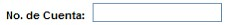

Ayuda SAC2

En esta opción podemos encontrar información referente a un tema en específico el cual se necesite consultar, así como respuestas, sugerencias, condiciones de uso y otra información de soporte referente a los módulos y herramientas del sistema.
Copyright © 2010,WELLCOM